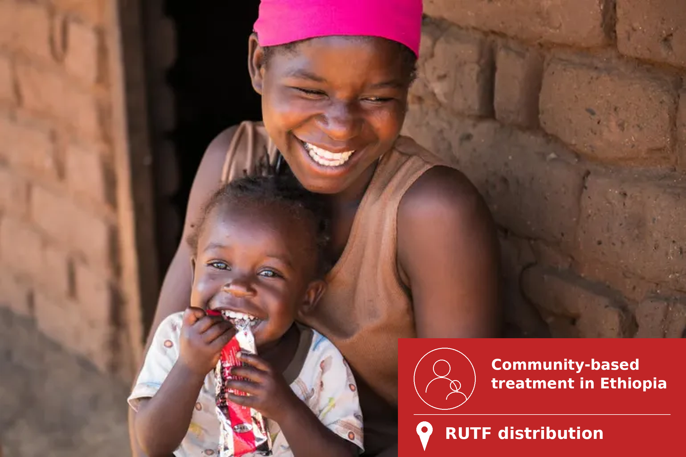
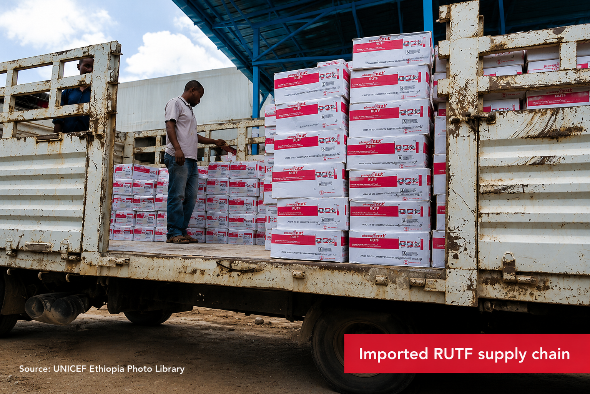
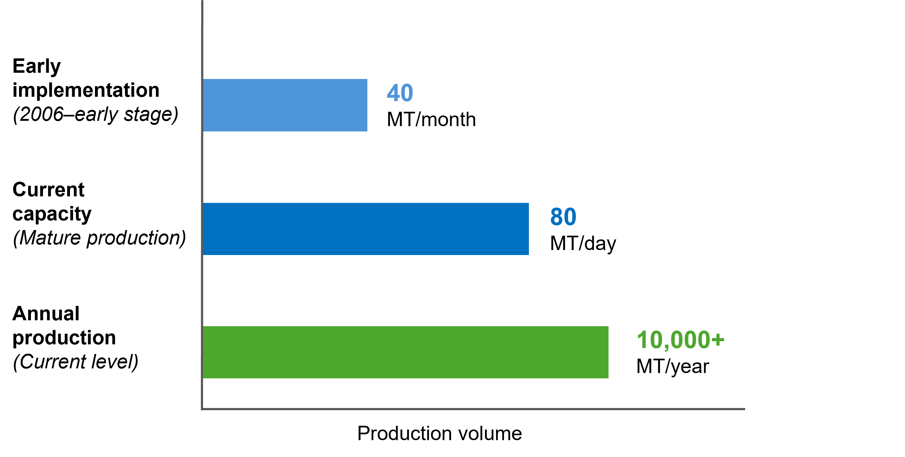
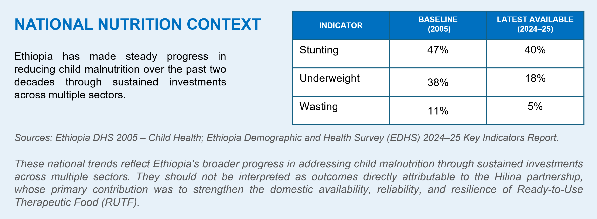

Annex – Detailed Partner Roles 18
In 2005, Ethiopia faced a severe and recurrent child nutrition crisis — 47% of children under five were stunted, 38% underweight, and 11% wasted[1]. Treatment of severe acute malnutrition depended almost entirely on imported Ready-to-Use Therapeutic Food (RUTF), forcing UNICEF to airlift 400 metric tons from Europe to meet urgent treatment needs.
|  |
In response, UNICEF partnered with Hilina Enriched Foods PLC, Nutriset, and donor partners to establish Ethiopia's first large-scale local manufacturing platform for therapeutic foods. This case illustrates the Predictable Delivery Network model from the 'Advancing Partnerships Between Private Sector and Development Actors in Africa' Playbook — predictable procurement, catalytic financing, and technology transfer converting recurring humanitarian expenditure into sustainable domestic production.
Initiated in 2007 as an emergency supply response, the partnership became a long-term market development platform: Hilina today supplies more than 10,000 metric tons annually to UNICEF, WFP, USAID, and other partners.[2]
THE CHALLENGE IN 2005 | 47% Children under five stunted | 400 MT Of RUTF airlifted from Europe in 2005 | 11,400 MT Of RUTF imported between 2008 and 2011[3] |
THE CASE AT A GLANCE
Program | Local production of Ready-to-Use Therapeutic Foods (RUTF) — UNICEF–Hilina partnership, Ethiopia |
Playbook model | Model 3 — Predictable Delivery Networks |
Timeline | Airlift 2005 · Initiated 2007 · Production and expansion from 2007 onward |
Scale | From ≈ 40 MT/month to ≈ 80 MT/day — 10,000+ MT per year |
Financing | USD 300,000 donor-financed equipment — repaid through RUTF deliveries |
Key mechanism | Anchor procurement · repayment-through-supply · technology transfer |
Led by | UNICEF · Hilina · Nutriset · donor partners · Government of Ethiopia |
Therapeutic nutrition had long been a critical component of Ethiopia's humanitarian and public health response. Recurrent droughts, food insecurity, and humanitarian crises generated sustained demand for the treatment of severe acute malnutrition. In 2005, one in every eight Ethiopian children did not survive to their fifth birthday. A well-established procurement system had evolved in response: UNICEF and other partners purchased RUTF from international manufacturers and transported it to Ethiopia for distribution through national nutrition programs. The system kept life-saving products available — but it was built around importation. |  |
Humanitarian financing paid for the same finished products year after year, while long supply chains raised transport costs, extended delivery timelines, and left the nutrition response exposed to external supply disruptions.
Ethiopia's Nutrition Challenge (mid-2000s) | |||
1 in 8 children did not survive to their fifth birthday[4] | 400 MT of RUTF airlifted from Europe during the 2005 emergency | 11,400+ MT of RUTF imported and distributed between 2008 and 2011[5] | 0 large-scale domestic RUTF producers before the partnership |
WHY THE STATUS QUO WAS UNSUSTAINABLE
The system delivered life-saving treatment but remained dependent on imports, limiting both efficiency and long-term resilience.
SUPPLY VULNERABILITY ● Long international supply chains exposed to global disruptions ● Extended delivery timelines during emergencies ● Dependence on a small number of overseas manufacturers | ECONOMIC INEFFICIENCY ● Recurring donor spending on imports — no lasting productive asset created ● High transportation and logistics costs ● No pathway for capable local manufacturers to enter the market | RESPONSE RISK ● Emergency needs met by costly airlifts of finished products ● 1 in 8 children did not survive to age five ● Rapid response constrained by international logistics |
By the mid-2000s the paradox was clear: demand, technology, and manufacturing potential all existed — what was missing was the system to connect them. This is the status quo the partnership set out to change. |
The Playbook approaches partnership design as a diagnostic exercise rather than a model selection exercise. It recognizes that many initiatives already demonstrate strong social impact, trusted delivery relationships, and clear development value, yet struggle to achieve scale, sustainability, or meaningful private-sector participation. The objective of the diagnostic is therefore to identify the structural conditions limiting deployment and understand why promising initiatives fail to become investable, scalable, and sustainable.
The diagnostic examines seven complementary analytical lenses:
1 | Demand and commercial pathways — Assesses whether strong social demand has been translated into credible commercial demand supported by sustainable payment and offtake mechanisms. |
2 | Project preparation and readiness — Evaluates whether projects have progressed beyond concept stage into technically, financially, legally, and institutionally prepared investment opportunities. |
3 | Financing logic — Examines whether an appropriate financing architecture exists to mobilize, deploy, and sustain capital over time. |
4 | Risk allocation — Assesses whether technical, financial, operational, and institutional risks are allocated to the actors best positioned to manage them. |
5 | Institutional coordination and role clarity — Evaluates whether responsibilities, leadership, and coordination mechanisms are sufficiently clear to support implementation at scale. |
6 | Legitimacy and community integration — Examines whether legitimacy, stakeholder ownership, and community engagement support long-term adoption and implementation. |
7 | Operational sustainability and scalability — Assesses whether the operational, institutional, and market conditions required for long-term scaling are already in place. |
The resulting diagnostic provides the analytical foundation for identifying the binding constraints that limit deployment and inform subsequent partnership model choice.
Applying the Playbook framework revealed four interrelated structural constraints that prevented sustained humanitarian demand from translating into domestic production.
CONSTRAINT | WHAT EXISTED The strengths and assets in place | WHAT WAS MISSING The key gap blocking deployment |
1 Demand without Predictability | Demand of unusual depth: recurrent nutrition emergencies made RUTF an essential, continuously procured product. UNICEF imported and distributed more than thousands of metric tons — an identifiable anchor buyer purchasing at scale. | The bridge from procurement to investment Purchasing was driven by emergency cycles and donor funding. Manufacturers had no visibility over future volumes — demand was real but unforecastable, and therefore unable to support long-term investment. |
2 Technology without Transfer | A proven, clinically validated product — RUTF — manufactured safely at scale by international producers such as Nutriset, and an emerging domestic food industry, with Hilina operating established production lines. | A pathway to certified local production Specialized formulations, food-safety systems, and UNICEF procurement standards could not be acquired by purchasing equipment alone; they required the transfer of know-how, processes, and quality systems. |
3 Capability without Capital | A capable manufacturer willing to invest, donors already spending substantially on therapeutic nutrition, and a visible market supported by recurring expenditure. | Financing for productive capacity The specialized equipment required roughly USD 300,000 — beyond Hilina’s independent reach, while financial institutions had little appetite for specialized facilities without predictable demand. |
4 Actors without Coordination | Every required actor was present: UNICEF (procurement and technical expertise), the Government (policy and public health leadership), Hilina (manufacturing capacity), Nutriset (production know-how). | An integrated delivery system Each institution pursued its own mandate. No single actor had the mandate, capabilities, or incentives to combine procurement certainty, technology transfer, financing, and manufacturing on its own. |
These constraints reinforced one another and together they created a deployability gap between humanitarian demand and domestic production. |
The constraints identified through the diagnostic align closely with the situations for which the Predictable Delivery Network model was designed. Rather than creating new providers or developing new technologies, the model organizes existing capabilities into a coordinated delivery system through four complementary functions:
Demand structuring converts visible but volatile demand into credible purchasing arrangements. UNICEF's role as anchor purchaser transformed recurring humanitarian procurement into a commercial signal that a manufacturer could invest against — the direct answer to unpredictable demand.
Capability building strengthens existing providers rather than replacing them. Technology transfer from Nutriset gave Hilina the production processes, quality management systems, and manufacturing standards required to meet international procurement requirements — closing the transfer gap.
Catalytic financing removes the initial investment barrier while preserving commercial discipline. Donor-financed equipment, repaid through product deliveries, created productive capacity where commercial finance was unavailable — resolving the capital constraint.
Network coordination, brought these complementary functions into a single delivery system. Clear roles, shared standards, and coordinated responsibilities aligned UNICEF, Hilina, Nutriset, donor partners, and the Government of Ethiopia around a common objective, enabling domestic RUTF production to operate as an integrated and reliable system.
WHY ALTERNATIVE APPROACHES WERE LESS SUITABLE
Financing - only Capital for equipment — but no predictable purchasing commitments and no resolution of fragmented coordination | Technology - only Technical assistance and quality support — without the purchasing certainty needed to justify investment | Grant - based Funds equipment or initial production — without the standards, verification, and predictable purchasing required for sustainability |
SIX UNDERLYING ASSUMPTIONS: Sustained humanitarian demand for RUTF · A credible multi-year purchasing commitment from an anchor buyer · Technology transferable to a capable local manufacturer · International quality standards achievable locally · Economies of scale attainable without ongoing subsidy · Partners alignable over an extended period. |
No single organization could have established domestic RUTF production on its own. The partnership therefore brought together complementary public, private, and development actors, each contributing a distinct capability required to transform an import-dependent humanitarian response into a sustainable local production system.
ACTOR | Coordinate | Anchor demand | Finance | De-risk | Deliver | Transfer know-how | Enable and regulate |
UNICEF | ● | ● | ● | ||||
Donor partners | ● | ● | |||||
Nutriset | ● | ||||||
Hilina Enriched Foods | ● | ||||||
Government of Ethiopia | ● |
While each partner performed a distinct function, UNICEF played the coordinating role that connected demand, financing, technology transfer, manufacturing, and public sector leadership into a single delivery system. |
By the mid-2000s the question was no longer whether Ethiopia needed domestic RUTF production, but how to make it commercially viable. The specialized equipment alone represented USD 300,000[6] — a commitment Hilina could not have financed independently against uncertain demand. The solution was a partnership in which each actor plays to its comparative advantage.
ROLE CARDS
UNICEF Anchor purchaser and network organizer — the only actor spanning demand structuring, coordination, and risk management ■ Identified the opportunity: repeated emergencies revealed the cost of import dependence ■ Structured the partnership — donor equipment financing, Nutriset technology transfer, Hilina manufacturing ■ Anchor procurement made demand bankable; safeguards (advance payments, inflation buffers, phased repayment, bank guarantees) kept risk managed | ||
Hilina Enriched Foods PLC The manufacturing platform — from biscuits and flour to therapeutic nutrition ■ Installed and operated the specialized production line to international standards ■ Repaid the donor-financed equipment through RUTF deliveries to UNICEF ■ Scaled from ≈ 40 MT/month to ≈ 80 MT/day; diversified to WFP, USAID, and beyond[7] | Nutriset Technology and knowledge partner — developer of Plumpy'Nut ■ Transferred formulations, production processes, and manufacturing protocols ■ Built the quality management systems required by UNICEF specifications ■ Embedded lasting capability — expertise remained with the domestic producer | |
Donor partners Catalytic financiers — capacity, not commodities ■ Financed the USD 300,000 specialized production equipment ■ Repayment-through-supply linked public investment to production performance ■ Absorbed early commercial risk, then stepped back as the market matured | Government of Ethiopia The enabling environment ■ Public health leadership and national nutrition programs created the policy context ■ Integrated locally produced RUTF into the national nutrition response ■ Gained supply resilience for future nutrition emergencies | |
Detailed descriptions of each partner's role are provided in Annex.
The partnership's financing was modest in scale but precise in design. Rather than mobilizing large facilities, it deployed a single catalytic investment exactly where the diagnostic located the binding constraint — and structured its repayment so that every actor's incentives pointed in the same direction.
Donor partners financed the USD 300,000 of specialized production equipment that Hilina could not have financed independently. The investment was not a grant: its value was progressively recovered through Hilina’s deliveries of RUTF to UNICEF — so donor capital financed productive capacity and life-saving supply at the same time.
THE FINANCING MECHANISM
CATALYTIC CAPITAL
Donors finance USD 300,000
of specialized
production equipment
TECHNOLOGY TRANSFER
Nutriset provides technology,
know-how, and
quality assurance
PREDICTABLE DEMAND
UNICEF creates predictable
demand through
procurement commitments
Local
Production
Capacity
USD 300,000
REPAYMENT
MECHANISM
Hilina progressively repays the
USD 300,000 investment through
RUTF deliveries to UNICEF.
Progressive repayment through supply
Delivery 1
% repayment
Delivery 2
% repayment
Final delivery
Full repayment
· · ·
Once the equipment was financed, the mechanism translated capital into supply through a simple, disciplined loop:
FROM DONOR CAPITAL TO DOMESTIC SUPPLY
DONOR PARTNERS USD 300,000 in specialized production equipment — directed to capacity, not commodity imports | → | HILINA Installs and operates the line; produces RUTF to international standards | → | UNICEF Procures locally produced RUTF for national nutrition programs; sets specifications and quality standards |
← Repayment through supply — the value of the equipment is progressively recovered through RUTF deliveries to UNICEF | ||||
KEY MECHANISM Donor capital was repaid in life-saving product, not cash — every dollar invested created both productive capacity and therapeutic food supply, and once repaid, left a commercially viable manufacturer behind. |
Financial Discipline and Risk Management
The arrangement was designed to make commercial risk manageable rather than transfer it away. Hilina remained fully responsible for operating the facility efficiently — repayment obligations were tied to deliveries, preserving its incentive for operational performance. UNICEF maintained product specifications and procurement requirements, making continued purchasing conditional on quality compliance.
As the partnership matured, additional safeguards — advance payment arrangements, inflation buffers, phased repayment structures, and bank guarantees — strengthened financial risk management while protecting public resources. Commercial incentives, humanitarian standards, and performance-based repayment worked in tandem.
Incentive Alignment
The partnership was designed to align the commercial, humanitarian, technical, and development incentives of all participating actors around a shared objective: establishing sustainable domestic RUTF production. Rather than relying on goodwill or mandates, the financing model created mutually reinforcing incentives that enabled each stakeholder to advance its own objectives while contributing to the success of the overall program.
INCENTIVE ALIGNMENT — WHY EVERY ACTOR STAYS AT THE TABLE
UNICEF Secures a reliable domestic supplier and a faster, more resilient emergency response | Government of Ethiopia Strengthens the national nutrition system without building state-owned capacity | Donor partners Convert recurring procurement spending into lasting productive capacity | ||
Hilina Enters a higher-value specialized market backed by predictable demand | → | SHARED OBJECTIVE Sustainable domestic production of therapeutic foods | ← | Nutriset Localizes its technology and extends its global producer network |
Children and communities More reliable access to life-saving treatment, closer to where it is needed | Ethiopia’s nutrition system Reduced import dependence and stronger preparedness for future emergencies | Each actor’s success reinforces the others’ — a self-reinforcing ecosystem. |
These complementary incentives created strong interdependence across the partnership. Hilina's viability depended on UNICEF's procurement commitments and Nutriset's know-how; UNICEF's supply security depended on Hilina's operational performance; donors' impact depended on the repayment mechanism functioning; and the Government's resilience objectives depended on all of them. Because each actor's success depended on the others', commercial viability, humanitarian outcomes, and industrial development progressed together rather than competing.
The partnership relied on a streamlined governance model: clearly defined institutional responsibilities, contractual relationships, technical standards, and procurement commitments — coordination without new bureaucracy. Each organization focused on its comparative advantage while remaining accountable to the others.
GOVERNANCE AT A GLANCE — THREE PILLARS
Decision-making Authority follows competency UNICEF Operational leadership · partnership structuring · procurement and specifications Hilina Manufacturing operations · delivery schedules · facility management Nutriset Technical oversight · quality management systems Donor partners Equipment financing Government of Ethiopia Policy and public-health environment | Coordination One operational framework, no new bureaucracy UNICEF procurement forecasts ↓ Production planning at Hilina ↓ Continuous Nutriset ↔ Hilina technical collaboration ↓ Sequenced obligations — capacity operational before repayment began | Accountability Embedded in operations, not external oversight ■ Repayment-through-supply tied public funds to delivered output ■ UNICEF specifications — continued procurement conditional on quality ■ Nutriset technical standards for processes and protocols ■ Maturing safeguards: advance payments, phased repayment, inflation buffers, bank guarantees |
Three features distinguish this governance model. Accountability was embedded in the commercial arrangement itself rather than delegated to external oversight; coordination ran through a single operational framework connecting procurement, production, technical assistance, and quality assurance; and responsibilities followed each organization's core competency — allowing every partner to act independently while contributing to a common delivery objective.
The partnership achieved results extending well beyond the establishment of a single manufacturing facility. It demonstrated that predictable procurement, catalytic financing, and technology transfer can be combined to create a commercially viable domestic production platform — with each phase building the confidence required for the next.
THE IMPLEMENTATION JOURNEY
2005 | Nutrition emergency — ≈ 400 MT of RUTF airlifted from Europe; 47% of under-fives stunted |
2007 | Partnership initiated — donor-financed equipment, Nutriset technology transfer, UNICEF anchor procurement |
Early years | Production line operational at ≈ 40 MT/month; deliveries to UNICEF begin repaying the investment |
Over time | USD 300,000 investment progressively recovered through supply; safeguards added as volumes grew |
Expansion | Capacity reaches ≈ 80 MT/day; customer base widens to WFP, USAID, and other partners |
Today → | 10,000+ MT per year; diversified portfolio; platform supports initiatives such as First Foods Africa |
Each phase of this journey built confidence before larger commitments were made — the defining characteristic of Model 3.
FROM EMERGENCY RESPONSE TO MANUFACTURING PLATFORM
As implementation progressed, the platform matured across several dimensions simultaneously — not only in production volume, but in customers, products, financing, and its role within Ethiopia's nutrition system.
EARLY IMPLEMENTATION (2007 →) | MATURE PLATFORM — TODAY | ||
Production capacity | ≈ 40 MT per month | → | ≈ 80 MT per day — more than 10,000 MT per year[8] |
Customer base | Single anchor buyer — UNICEF | → | UNICEF, WFP, USAID, and other development partners |
Product portfolio | Single product — RUTF | → | Diversified nutrition products, including First Foods Africa |
Financing | Donor-financed equipment under repayment | → | Conventional buyer–supplier relationship — commercially sustainable |
Market role | Emergency import substitution | → | Long-term platform for local sourcing and market development |

Beyond production volumes, the partnership fundamentally changed the structure of Ethiopia's therapeutic nutrition supply system. Locally produced RUTF improved supply reliability, reduced dependence on imports, and strengthened the country's ability to respond rapidly to emergencies — particularly during periods of heightened demand or global supply disruption.For children suffering from severe acute malnutrition, this meant life-saving treatment could reach them more quickly and dependably. For the humanitarian system, it demonstrated that procurement can serve as a catalyst for industrial development: predictable demand, catalytic investment, and technology transfer created the conditions for a domestic manufacturing industry to emerge and continue expanding beyond the initial intervention..

More broadly, the case reinforces one of the Playbook's central propositions: development resources create their greatest value when they build the systems required for delivery rather than financing the same purchases repeatedly. A single USD 300,000 investment, structured around predictable demand, produced a manufacturing platform that has supplied therapeutic food for nearly two decades — capacity that repeated import financing could never have created.While the partnership demonstrates how predictable institutional demand can catalyze domestic manufacturing capacity, its success depended on contextual conditions that may not exist in every setting. The case therefore illustrates both the strengths of Model 3 and the circumstances under which its application is more demanding.
Case-specific risks Sustaining the Ethiopian platform Anchor-buyer concentration — Early viability depended on a single institutional purchaser; a shift in UNICEF priorities or funding before diversification could have stranded the investment Quality and certification — Loss of procurement eligibility would have interrupted purchasing and undermined confidence in locally manufactured products Humanitarian demand volatility — Procurement volumes remain exposed to funding levels, treatment protocols, and emergency cycles rather than conventional market demand | Model-level risks Conditions required to apply Model 3 elsewhere Demand scale — Requires large, recurring institutional demand and a credible anchor purchaser Local capability — Requires capable domestic organizations; where capacity is very limited, institutional development must come first Transfer completeness — Incomplete knowledge transfer or weak quality systems undermine certified production Sustained commitment — Demand, technical support, financing, and delivery must stay aligned over an extended period |
The case demonstrates that Model 3 should be transferred as a process rather than replicated as a fixed institutional arrangement.
Transfer the process Highly transferable across sectors and geographies ■ Convert recurring institutional procurement into credible multi-year commitments ■ Build on existing local organizations rather than creating new institutions ■ Couple technology transfer with a live commercial opportunity ■ Use catalytic finance to create productive assets, with performance-linked repayment ■ Sequence obligations so capacity exists before repayment begins | Adapt the configuration Context-specific — adjust to local institutions and markets ■ The anchor purchaser (a UN agency in Ethiopia) ■ The technical partner and transfer arrangement ■ The financing source and repayment structure ■ Product standards and the regulatory regime ■ Sector priorities and market maturity | |
Replicate the underlying logic — make existing demand predictable enough to finance local capability — not Ethiopia’s institutional configuration. | ||
Ultimately, the strength of Model 3 lies less in any individual institution or financing instrument than in its ability to organize demand, capability, capital, and coordination into a single predictable system. That predictability — not the size of the investment — is what allowed a USD 300,000 commitment to create a durable national industry.
The Hilina partnership demonstrates that the success of Model 3 extends beyond any single transaction. Its principal strength lies in reorganizing existing capabilities — demand, technology, manufacturing, and finance — around predictability and aligned incentives. The following insights highlight the broader lessons emerging from the case.
INSIGHT — WHAT THE CASE SHOWS | RECOMMENDATION — WHAT TO DO | |
Predictable demand is a powerful investment signal | → | Convert recurring procurement into structured, multi-year purchasing commitments |
Existing capabilities beat new institutions | → | Strengthen established local organizations rather than building parallel delivery systems |
Technology transfer endures when tied to commercial opportunity | → | Link technical assistance to predictable market access |
Catalytic finance should create assets, not fund purchases | → | Use performance-linked repayment to build productive capacity |
Partnership design matters more than funding volume | → | Integrate financial, technical, and commercial contributions against complementary constraints |
The Hilina partnership demonstrates that predictable institutional demand can become far more than a procurement mechanism. Combined with catalytic investment, technology transfer, and carefully aligned incentives, it became the foundation of a sustainable domestic production system delivering both commercial and development outcomes. Rather than treating humanitarian procurement as recurring expenditure, the partnership transformed existing purchasing power into a long-term investment in local industrial capability, national resilience, and faster, more reliable treatment for the children who depend on it.
SCALE FOLLOWS PREDICTABILITY, NOT SPENDING
Anchor | → | Finance | → | Transfer | → | Produce | → | Repay | → | Scale |
UNICEF turns recurring demand into firm orders | Donors fund the USD 300K line | Nutriset embeds know-how and quality systems | Hilina makes RUTF to global standards | Repaid in RUTF, not cash | 80 MT/day · many buyers · wider portfolio | |||||
Model 3’s greatest contribution is not the demand it creates, but the predictability it adds to demand that already exists. | ||||||||||
Annex – Detailed Partner Roles
This annex provides additional information on the specific responsibilities and contributions of each partner involved in the local production of Ready-to-Use Therapeutic Foods in Ethiopia.
UNICEF's involvement began with a recurring operational challenge rather than a manufacturing initiative. Repeated nutrition emergencies required large volumes of RUTF, yet response remained dependent on imports — long supply chains, longer response times, and continued reliance on external manufacturers. UNICEF identified the opportunity to use its purchasing power to build domestic capacity, and structured the partnership accordingly: donor financing for specialized equipment, technical expertise from Nutriset, and manufacturing commitment from Hilina — with the machinery financed not as a grant but repaid through future product deliveries.
As the partnership's anchor purchaser, UNICEF provided the predictable demand that made local investment viable, transforming procurement from a purchasing function into a market-shaping instrument. Throughout implementation it maintained product standards, procurement requirements, and performance expectations; as the partnership matured, additional safeguards — advance payment arrangements, inflation buffers, phased repayment structures, and bank guarantees — strengthened financial discipline while protecting public resources.
Hilina entered the partnership as an established Ethiopian food manufacturer — biscuits, flour, and processed foods — with no prior experience in therapeutic nutrition. Rather than creating a new enterprise, the partnership repositioned its existing industrial capabilities toward specialized therapeutic foods. Hilina installed and operated the donor-financed production line, integrated new manufacturing processes, and progressively repaid the equipment through deliveries to UNICEF, retaining full commercial responsibility for the facility. Production grew from roughly 40 metric tons per month in the early stages to approximately 80 metric tons per day, with annual output exceeding 10,000 tons — and the company evolved from a single institutional buyer to serving USAID, the World Food Programme, and other partners while expanding its nutrition portfolio.
Nutriset — developer of Plumpy'Nut and an established manufacturer of therapeutic nutrition products — was the technical and knowledge partner. It supported Hilina in establishing the production processes, quality management systems, manufacturing protocols, and operational procedures required to consistently meet international standards and UNICEF procurement specifications. By embedding this expertise within a domestic manufacturer rather than delivering one-off assistance, the partnership converted technical support into a long-term investment in Ethiopia's manufacturing capability — and Hilina became a member of Nutriset's PlumpyField network of local producers.
Donor partners addressed the constraint that the diagnostic identified as decisive for market entry: the roughly USD 300,000 of specialized manufacturing equipment that Hilina could not have financed independently given uncertain procurement demand. Their financing was structured for recovery rather than transfer — the equipment's value was repaid through Hilina's product deliveries to UNICEF, linking public investment directly to production outcomes. By absorbing early commercial risk, donor capital enabled manufacturing capacity to emerge where commercial financing was unavailable, then receded as the partnership evolved into a conventional buyer–supplier relationship — a catalyst for market creation rather than a permanent subsidy.
The Government of Ethiopia was not the primary architect of the partnership, but it provided the institutional environment within which local production could emerge: national public health priorities and established nutrition programs created the policy context supporting investment in domestic capacity, and locally produced RUTF was integrated into the country's broader humanitarian nutrition response. In this way, government priorities and humanitarian procurement became mutually reinforcing — UNICEF's purchasing stimulated private investment, while domestic production strengthened the resilience and responsiveness of Ethiopia's nutrition system.
References & Notes
A new look at data from the 2005 Ethiopia Demographic and Health Survey (EDHS) ↑
Primary Research Interview – Hilina Enriched Foods PLC – March 2026 ↑
Emergency Nutrition Network (2012). CMAM Rollout in Ethiopia: The Way In to Scale Up Nutrition ↑
A new look at data from the 2005 Ethiopia Demographic and Health Survey (EDHS) ↑
Emergency Nutrition Network (2012). CMAM Rollout in Ethiopia: The Way In to Scale Up Nutrition ↑
Primary Research Interview – Hilina Enriched Foods PLC – March 2026 ↑
Primary Research Interview – Hilina Enriched Foods PLC – March 2026 ↑